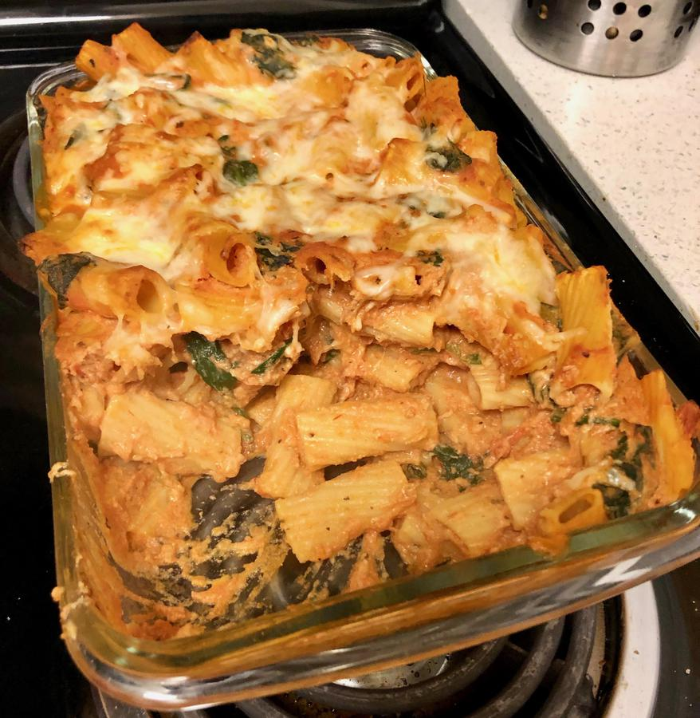

Personal rating: 4 / 5

Ziti noodles
6 oz spinach
1 jar (1 pound 9 ounces) pasta sauce
1 cup ricotta cheese
1⁄2 cup Parmesan
1⁄2 tsp garlic powder
1⁄4 tsp black pepper
1 cup shredded mozzarella, divided
Prepare pasta according to the instructions
Add spinach during the last minute of cook time, then drain the pasta and spinach. Place back in the pot
Stir the pasta sauce, ricotta, Parmesan, garlic, black pepper, and 1⁄2 cup mozzarella
Spoon pasta mixture into 9x13 inch pan and sprinkle the remaining 1/2 cup of mozzarella on top
Bake at 350 degrees for 30 min